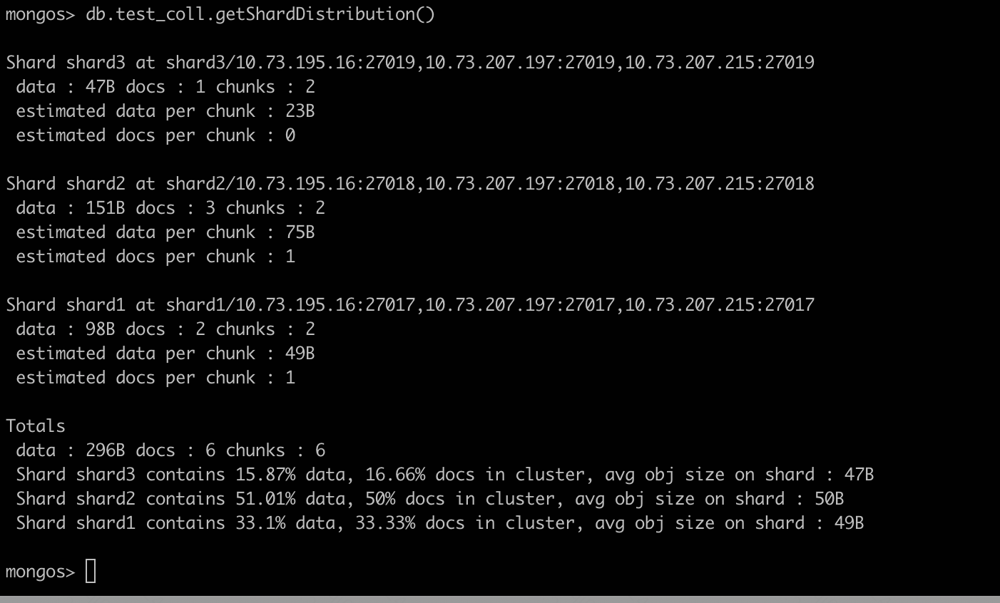

概述
- 本篇总结MongoDB相关基础使用
- 默认规范: mongos监听27000端口，configserver监听27001端口, shardserver 第一个分片监听27017端口, 第二个分片监听27018端口，以此类推
mongod配置文件详解
1 系统日志相关配置项
systemLog:
verbosity: <int>
quiet: <boolean>
traceAllExceptions: <boolean>
syslogFacility: <string>
path: <string>
logAppend: <boolean>
logRotate: <string>
destination: <string>
timeStampFormat: <string>
component:
accessControl:
verbosity: <int>
command:
verbosity: <int>
-
verbosity：日志级别，默认是0，可选参数[1-5]。
-
quiet: 是否以静默的方式输出日志，不推荐用于生产系统，因为它可能会使特定连接期间的跟踪问题变得更加困难。
-
traceAllExceptions: 打印详细信息进行排错。
-
syslogFacility：默认是user，系统将日志打入到syslog的设备级别。需要启用--syslog选项。
-
path：指定日志存放路径。
-
logAppend：当为true时，重启后log会追加到现有log文件中，默认是false，每次重启都会创建新的文件。
-
logRotate：日志回滚方式，默认是rename，重命名日志，可以设置reopen，如果设置reopen，则按照linux的方式来轮询，reopen需要和logappend=True 一起使用。
-
destination：输出日志的方式，是文件还是syslog.
-
timeStampFormat: 日志时间格式，默认是本地时间（iso8601-local），可选：iso8601-utc，ctime。
2 进程相关配置项
- mongod和mongos都会受到一些选项的影响，但是如果一些选项不支持，相应进程启动时会报错.
processManagement:
fork: <boolean>
pidFilePath: <string>
timeZoneInfo: /usr/share/zoneinfo
-
fork: 是否以守护进程方式运行, 如果用supervisor启动mongod或者mongos进程，则这里要设置为false
-
pidFilePath: PID文件的位置
3 网络相关配置项
net:
port: <int>
bindIp: <string>
bindIpAll: <boolean>
maxIncomingConnections: <int>
wireObjectCheck: <boolean>
ipv6: <boolean>
unixDomainSocket:
enabled: <boolean>
pathPrefix: <string>
filePermissions: <int>
http:
enabled: <boolean>
JSONPEnabled: <boolean>
RESTInterfaceEnabled: <boolean>
ssl:
sslOnNormalPorts: <boolean> # deprecated since 2.6
mode: <string>
PEMKeyFile: <string>
PEMKeyPassword: <string>
clusterFile: <string>
clusterPassword: <string>
CAFile: <string>
CRLFile: <string>
allowConnectionsWithoutCertificates: <boolean>
allowInvalidCertificates: <boolean>
allowInvalidHostnames: <boolean>
disabledProtocols: <string>
FIPSMode: <boolean>
compression:
compressors: <string>
-
net.port：监听端口
-
net.bindIp：监控ip, 可以指定要监听的IP，也可以设置为0.0.0.0
-
bindIpAll: 相当于监听所有IP
-
net.maxIncomingConnections：最大连接数限制，默认是65535
-
net.wireObjectCheck：默认为true，检查客户端传入的BSON数据是否正常。
-
net.ipv6：是否启用IPv6 默认是false。
-
net.unixDomainSocket.enabled：是否启用网络套接字连接，默认是true。
-
net.unixDomainSocket.pathPrefix：套接字存放路径。默认/tmp
-
net.unixDomainSocket.filePermissions：套接字文件的权限，默认是0700.
-
net.http:确保生产环境中的HTTP状态接口，REST API和JSON API都被禁用，以防止潜在的数据暴露和攻击者的漏洞。
-
net.http.enabled: 默认是false，从3.2版本开始已经弃用。
-
net.http.JSONPEnabled：通过HTTP接口启用或禁用JSONP访问，从3.2版本开始已经弃用。
-
net.http.RESTInterfaceEnabled: 启用或禁用简单的REST API。从3.2版本开始已经弃用。
-
net.ssl：主要配置ssl参数信息。
-
net.compression.compressors: 是否启用网络压缩。
4 安全相关配置项
security:
keyFile: <string>
clusterAuthMode: <string>
authorization: <string>
transitionToAuth: <boolean>
javascriptEnabled: <boolean>
redactClientLogData: <boolean>
sasl:
hostName: <string>
serviceName: <string>
saslauthdSocketPath: <string>
enableEncryption: <boolean>
encryptionCipherMode: <string>
encryptionKeyFile: <string>
kmip:
keyIdentifier: <string>
rotateMasterKey: <boolean>
serverName: <string>
port: <string>
clientCertificateFile: <string>
clientCertificatePassword: <string>
serverCAFile: <string>
ldap:
servers: <string>
bind:
method: <string>
saslMechanism: <string>
queryUser: <string>
queryPassword: <string>
useOSDefaults: <boolean>
transportSecurity: <string>
timeoutMS: <int>
userToDNMapping: <string>
authz:
queryTemplate: <string>
常用的配置
security:
authorization: 'enabled'
keyFile: /data/web_server/mongodb/shard/mongodb_27017/etc/mongodb-keyfile-benchmark
clusterAuthMode: "keyFile"
- 指定了keyFile 和 clusterAuthMode
5 引擎相关配置项
storage:
dbPath: <string>
indexBuildRetry: <boolean>
repairPath: <string>
journal:
enabled: <boolean>
commitIntervalMs: <num>
directoryPerDB: <boolean>
syncPeriodSecs: <int>
engine: <string>
mmapv1:
preallocDataFiles: <boolean>
nsSize: <int>
quota:
enforced: <boolean>
maxFilesPerDB: <int>
smallFiles: <boolean>
journal:
debugFlags: <int>
commitIntervalMs: <num>
wiredTiger:
engineConfig:
cacheSizeGB: <number>
journalCompressor: <string>
directoryForIndexes: <boolean>
collectionConfig:
blockCompressor: <string>
indexConfig:
prefixCompression: <boolean>
inMemory:
engineConfig:
inMemorySizeGB: <number>
-
storage.dbPath: 数据文件存放位置。
-
storage.indexBuildRetry：默认是True。是否在下次启动时重建不完整的索引。这种情况适用于在索引生成中间关闭或停止后mongod重新启动的情况。在这种情况下，mongod总是删除任何不完整的索引，然后，默认情况下，尝试重建它们。要阻止mongod重建索引，请将此选项设置为false。
-
storage.repairPath：存放 --repair的临时文件，使用完成后，删除，只能用于mongod。
-
storage.journal.enabled：是否启用二进制日志。64位系统时，默认为True. 也就是每次真正写数据之前，先记录日志，确保数据不丢失
-
storage.journal.commitIntervalMs: 进程在日志操作之间允许的最大时间,默认是100毫秒，或30毫秒
-
storage.directoryPerDB: 默认为false，为true时，使用单独的目录存放数据库，目录位于storage.dbPath目录下，每个子目录名称对应于数据库名称。
-
storage.syncPeriodSecs: 数据sync刷新到磁盘的时间间隔，默认60，设置为0时，则不会刷新到硬盘。
-
storage.engine：存储引擎，默认：wiredTiger
-
storage.wiredTiger.engineConfig.cacheSizeGB：WiredTiger将用于所有数据的内部缓存的最大大小。最大：一半内存减1G，或者256M。不推荐超过最大设置。
-
storage.wiredTiger.engineConfig.journalCompressor: 压缩WiredTiger日志数据的压缩类型。none, snappy, zlib。
-
storage.wiredTiger.engineConfig.directoryForIndexes:默认为false，当为True时，会在子目录中创建一个index文件夹存放索引。可以通过快捷方式将索引文件移走。
-
storage.wiredTiger.collectionConfig.blockCompressor：数据压缩格式：none, snappy, zlib。
-
storage.wiredTiger.indexConfig.prefixCompression: 启用或禁用索引数据的前缀压缩。默认为True。
-
storage.inMemory.engineConfig.inMemorySizeGB：内存存储引擎数据分配的最大内存量，默认为：一半内存减1G。
6 慢查询相关配置项
operationProfiling:
slowOpThresholdMs: <int>
mode: <string>
-
operationProfiling.slowOpThresholdMs: 数据分析器，记录慢查询，默认100ms
-
operationProfiling.mode: 默认关闭，记录级别。slowOp，只记录慢查询，all记录索引值。
7 主从复制相关配置项
replication:
oplogSizeMB: <int>
replSetName: <string>
secondaryIndexPrefetch: <string>
enableMajorityReadConcern: <boolean>
-
replication.oplogSizeMB: 复制操作日志的最大大小,oplog默认占用磁盘5%最好。
-
replication.replSetName：副本集的名字。shard的话设置为shard1、shard2之类，configserver设置为configserver
-
replication.secondaryIndexPrefetch：只适用于mmapv1引擎，默认参数：all 在从oplog应用操作之前，二进制文件将与操作相关的所有索引加载到内存中。
-
replication.enableMajorityReadConcern：启用阅读关注级别的“多数”。默认false。
8 分片相关配置项
mongod进程的sharding配置如下:
sharding:
clusterRole: <string>
archiveMovedChunks: <boolean>
-
sharding.clusterRole：角色定义：configsvr：配置服务器，shardsvr：分片服务器。
-
sharding.archiveMovedChunks：默认是false，在块迁移期间，分片不会保存从分片移出的文档。
mongos进程的sharding配置如下:
sharding:
configDB: configserver/10.73.195.16:27001,10.73.207.215:27001,10.73.207.197:27001
9 mongos参数
replication:
localPingThresholdMs: <int>
sharding:
configDB: <string>
-
replication.localPingThresholdMs: 默认15ms，ping值每10s更新一次，mongos将客户端请求转发给延迟较小的secondary节点。
-
sharding.configDB：用来配置config服务器的列表。
分片集群搭建
包含mongos、config、shard1、shard2、shard3五个集群部署步骤。
常用命令
1 监控类、状态查看类
mongos> use sre
mongos> db.table1.stats().sharded #查看table1是否分片
true #true表示已经开启分片，如果集合没有开启分片，会返回：Collection sre.sre.table4 is not sharded.
mongos>
mongos> db.table1.stats().shards #查询分片的详细状态数据，db.table1.stats()返回的数据更多
##返回非常详细的数据
mongos> db.table1.getShardDistribution() #在mongo上查看数据分布
mongos> db.stats() # 返回db的详细统计信息
- 
2 reconfig
- MongoDB的reconfig命令用于重新配置现有副本集，覆盖现有副本集配置。要运行该方法，必须连接到副本集的主节点。
将节点设置为hidden节点
cfg = rs.conf()
cfg.members[0].priority = 0
cfg.members[0].hidden = true
rs.reconfig(cfg)
替换节点的成员
cfg = rs.conf()
cfg.members[0].host = "mongo2.example.net"
rs.reconfig(cfg)
设置副本集节点的优先级
cfg = rs.conf()
cfg.members[0].priority = 0.5
cfg.members[1].priority = 2
cfg.members[2].priority = 2
rs.reconfig(cfg)